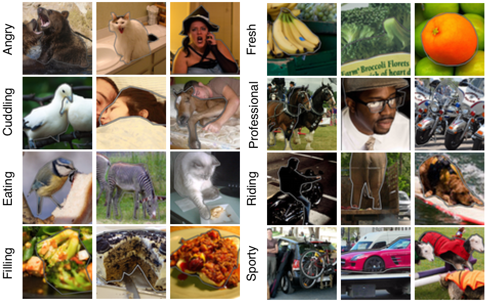
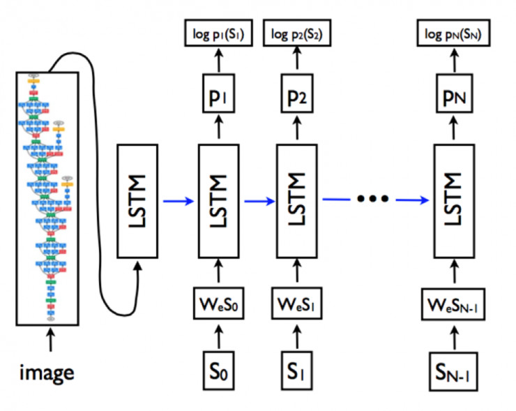
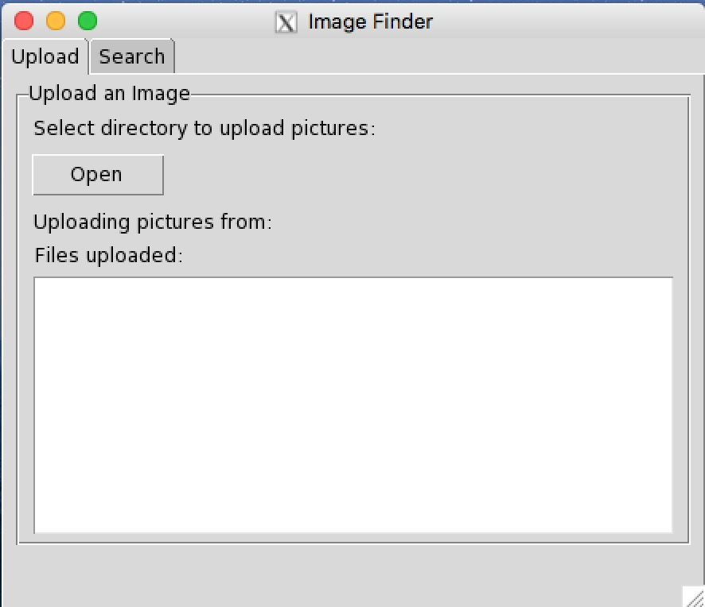
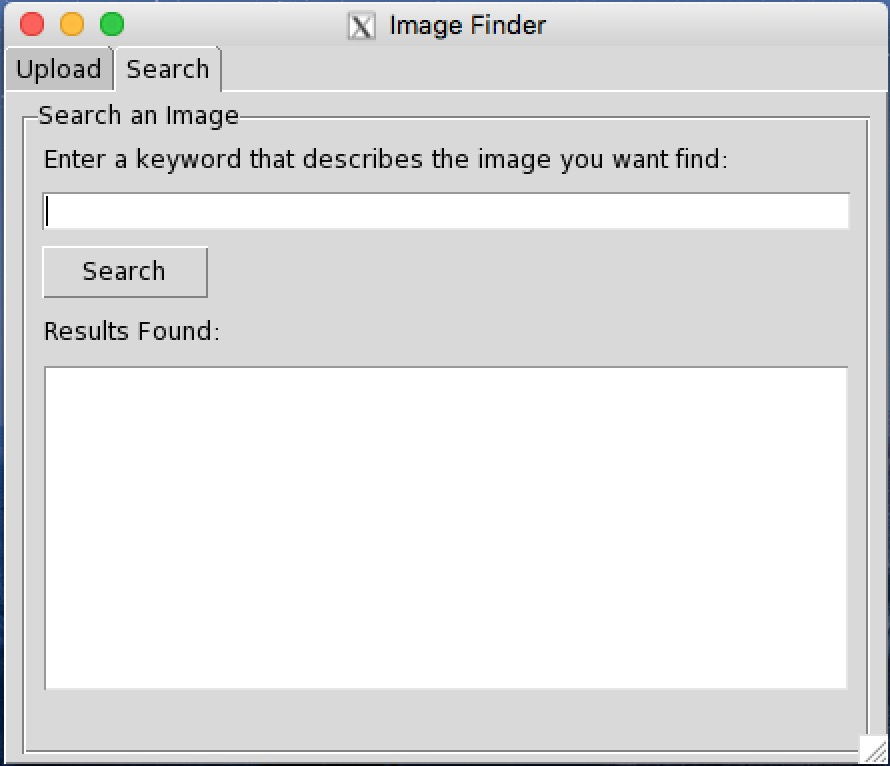

Team Members
Muhammad Kasim Patel
Shantanu Bobhate
8th December, 2017
Problem Definition
With the advent of the Cloud, Cloud storage for images and media has become really popular. Gone are the days when we had to free up space on our phones to make space for other photos, or try to off-load the images to a computer or a portable harddrive. Companies like Google, Dropbox understand Microsoft give users a bunch of free storage space on the cloud and the ability to purchase more space if needed. This way smartphone users of the current generate have ample space to save their images.
However, this vast quantity of storage also poses a problem. Images you take are likely to get lost or be forgotten in the enormous virtual storage space. Users would have to put in a lot of time and effort to make sure to organize the data to allow for easy access, but what if the cloud storage automatically captioned each image you storage? Wouldn't that be amazing and convenient? The storage could find an image you want for you.
This is exactly what we did for this project. We created a simple visual search application that is able to search through a dataset of images and look for images that match what the user is looking for using image captioning algorithm using a Long Short Term Memory Networks (LSTM), a special kind of Recurrent Neural Network (RNN), on the output of Convolutional Neural Network (CNN). This would allows us to generate captions for the images in our "Cloud Storage" and then allow us to perfrom a search for specific images.
Dataset
The image dataset used for training is Microsoft Common Objects in Context (COCO). MS COCO is a large-scale object detection, segmentation, and captioning dataset. MS COCO has several features which include 80 Object categories, attributes, 330K images and 5 captions per image. Using this image datasets for training, we would like to run the network on image folders to perform searches. Below is an example of the object attributes in the dataset.
|  |
Model
The model we are using is the google neural image caption model, it includes a pretrained Inception V3 model which serves as an input for the image encoder or the RNN This gives the image captioning model a better ability to recognize different objects and to generate more detailed captions First a CNN is pre-trained for an image classification task and the weights of the last hidden layer are fed as an input to the RNN decoder that generates sentences. This particular model of CNN uses batch normalization and yields the best performance on the image net dataset.
Next, the model makes use of a recurrent neural network which encodes the variable length input into a fixed dimensional vector and uses this representation to decode it into the desired output sentence. So if it's given an image, the same principle is applied to translate it into description by maximizing the likelihood p(S|I) of producing a target sequence of words S = {S1, S2, . . .} where each word St comes from a given dictionary which is present in the form of a text file, and that describes the image adequately. The probability of correct description is maximized given the image using the following formulation.
 |
| Model |  |
The above image shows the LSTM model combined with the CNN and word embeddings. The unrolled connections between the LSTM memories are in blue and they correspond to the recurrent connections. All LSTMs share the same parameters The LSTM model is trained to predict each word of the sentence after it has seen the image as well as all preceding words as defined by p(St|I, S0, . . . , St−1). For this purpose, it is instructive to think of the LSTM in unrolled form – a copy of the LSTM memory is created for the image and each sentence word such that all LSTMs share the same parameters and the output mt−1 of the LSTM at time t − 1 is fed to the LSTM at time t. All recurrent connections are transformed to feed-forward connections in the unrolled version. In more detail, if we denote by I the input image and by S = (S0, . . . , SN ) a true sentence describing this image.
GUI/Application
In order to make the project more interesting and application oriented, we decided to add a GUI component to the project. The job of the application was to caption images in a user's folder and make it easy to find images using keywords.
We divided the UI into 2 tabs, one for the upload mechanism and the other one for the search mechanism. On the upload tab a user and choose a directory and the application loads all the images in that directory, generates captions for them and then stores the filename and caption into a csv. The search tab allows the user to enter a keyword and returns matches that it finds in the csv file. The user can then select the sentence that best describes the image he/she is looking for. The application then displays the selected image. The images below show show how the application works.
|  |  |
For creating the GUI we used a python package called Tkinter. Creating the gui seemed quite daunting at first, but due time we managed to figure it out. The most challenging part was to modify the Neural Network code and have it interface with the UI. Displaying images was one of the most challenging parts.
Results
The results seem to be quite fine on our test image dataset which we made from random images taken from google images. As you can see from the image below it works well in identifying the bird but it assumes the hand of a person to be a tree.
References
- Show and Tell: A Neural Image Caption Generator
- Show and Tell: Lessons learned from the 2015 MSCOCO Image Captioning Challenge
- ImageNet: VGGNet, ResNet, Inception, and Xception with Keras
- Keras: Deep Learning for Python
- Tensor Flow Tutorial CIFAR-10
- Tkinter